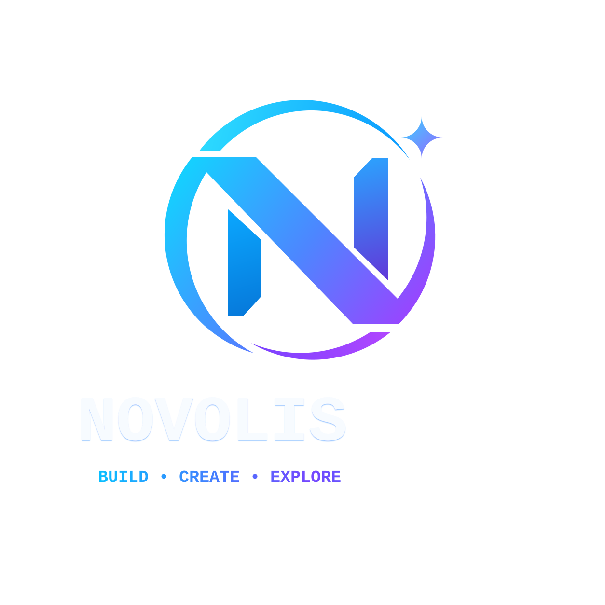

Documentation site
Every library. One docs home.
Each card opens that repository's docs/README.md (or a generated overview) with sidebar navigation built from the docs folder layout.
1libraries
2pages
docs/sparse corpus
novolis-docssite builder
Source and docs for every repository